rotten > Library > Death > Suicide > Suicide Notes
Suicide Notes
| 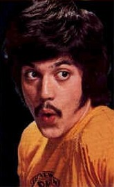 |
"I must end it. There's no hope left. I'll be at
peace. No one had anything to do with this. My decision totally."
Freddie Prinze
(June 22, 1954 - January 29, 1977)
Comedian. Star of Chico and the Man. Weight problems and mixed
ethnicity caused heightened sense of alienation. "I wasn't a true
spic, a true Jew, true anything. I was miserable fat schmuck with glasses
and asthma." Verdict of suicide altered to reflect an "accidental
shooting due to influence of Quaaludes," despite suicide note.
|
|
"When I am dead, and over me bright April Shakes
out her rain drenched hair, Tho you should lean above me broken hearted,
I shall not care. For I shall have peace. As leafey trees are peaceful
When rain bends down the bough. And I shall be more silent and cold hearted
Than you are now."
Sara Teasdale (1884 - 1933)
American poet born in St. Louis. She wrote several volumes of delicate
and highly personal poetry, including Helen of Troy, and Rivers
to the Sea. An extraordinarily sensitive, reclusive woman. Drowned
herself at age 48, directing the brunt of her suicide note toward a lover
who left her.
|
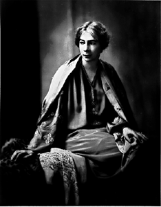 |
| 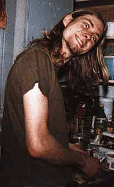 |
"Frances and Courtney, I'll be at your altar. Please
keep going Courtney, for Frances for her life will be so much happier
without me. I LOVE YOU. I LOVE YOU."
Kurt Cobain
(February 20, 1967 - April 8, 1994)
Sickly and bronchiatic as a child, lead singer of Nirvana as an adult.
Kurt Cobain's body was found by an electrician visiting his home to
install a security system. When no one answered the front door, he peered
through windows. The electrician thought he saw a mannequin sprawled on
the floor, until he observed a patch of blood by the figure's ear. When
police broke down the door, they found Cobain dead: the shotgun still
pointed at his chin, and a suicide note written in red ink resting on
a nearby counter. |
|
"Can you believe this crap?"
Jon Erik Hexum
(November 5, 1957 - October 18, 1984)
Starred as Phineas Bogg of Voyagers, opposite Meeno Peluce. Not
exactly a suicide note, but worthy of great literature. His was
an accidental death on the set of TV spy show "Cover Up.". He
shot himself with a pistol loaded with blanks, and the the resulting concussion
forced skull shards into his brain. He died six days later.
"I don't care if people think I date a lot or a little, if they think
I'm gay or if they think I'm an aborigine. Who gives a shit? I would rather
people didn't think I was gay but it doesn't upset me a whole lot, and
I've been to gay bars with friends and I don't worry about it. I'm sure
a lot of people at Exxon are unhappy with the way that company is run,
but I'm wildly appreciative to be here."
|
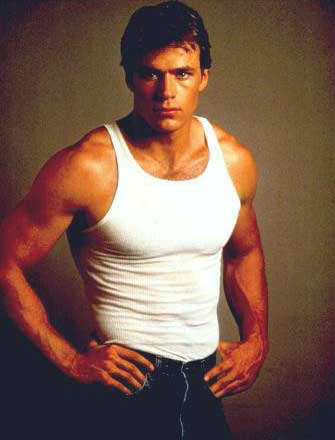 |
| 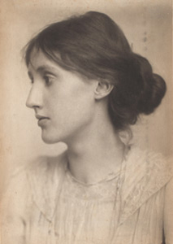 |
"I have a feeling I shall go mad. I cannot go on longer in these
terrible times. I shan't recover this time. I hear voices and cannot concentrate
on my work. I have fought against it but cannot fight any longer."
Virginia Woolf (1882-1941)
British author who made an original contribution to the form of the novel,
and a distinguished feminist essayist. She was heard to remark, "a
woman must have money and a room of her own if she is to write fiction."
Woolf loaded her pockets with stones and drowned herself in the Ouse River
near her Sussex home |
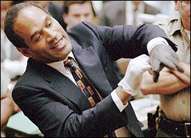"First
everyone understand nothing to do with Nicole’s murder. I loved her, allways
have and always will. If we had a promblem it’s because I loved her so
much."
O.J. Simpson (July 9, 1947 - )
NFL running back, Heisman trophy winner, co-star of the Naked Gun
franchise, and pop-culture murder defendant. Wrote his suicide note prior
to fleeing the scene in a white Ford Bronco. Spelling errors left intact.
"Recitly we came to the understanding that now we were’nt right for
each other at least for now. Dispite our love we were different and thats
why we murtually agreed to go our separate ways. It was tough spitting
for a second time but we both knew it was for the best. Inside I had no
doubt that in the future we would be close as fiend or more. I don’t want
to belabor knocking the press but I cant beleive what’s being said. Most
of it tottally made up. Paula, what can I say, You are special I’m sorry
we’re not going to have a chanc. I’v had a good life I’m proud of how
I lived, my momma tought me to do un to other. I’m sorry for the Goldman
family. I kwow how much it hurts. Nicole and I had a good life together,
all the press talk about a rocky relationship was no morr than what ever
long term relationship expriences. All her friends will confrim that I’v
been tottally loving and understanding of what she’s been going through." |
| 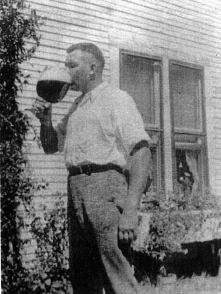"All
fled - all done, so lift me on the pyre;
The feast is over, and the lamps expire."
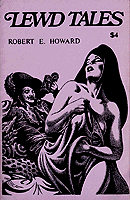Robert
E. Howard (1906-1936)
Credited with the creation of a literary sub-genre known as "Sword
and Sorcery." Became a writer so he could be his own boss. With respect
to his aversion to traditional employment, he once remarked, "my
passion for freedom is almost an obsession. Writing has always been a
means to an end I hoped to achieve. Personal liberty may be a phantom,
but I hardly think anybody would deny that there is more freedom in writing
than there is in slaving in an iron foundry, or working - as I have worked
- from 12 to 14 hours, seven days a week, behind a soda fountain. I have
worked as much as 18 hours a day at my typewriter, but it was work of
my own choosing." A life-long sufferer of bipolar disorder, Howard
grew increasingly morose in the late 1920's. He told his friends only
the prospect of his mother's grief kept him from committing suicide. When
she finally died, he climbed into his 1935 Chevy and took his life with
a borrowed pistol. |
"I don't believe that people should take their own lives without
deep and thoughtful reflection over a considerable period of time."
Wendy O. Williams
(May 28 1949 - April 6, 1998)
Lead singer for punk group The Plasmatics. Regularly arrested for obscenity,
resisting arrest and battery. Clashed with police in several cities over
the content of her performances. Arresting officers in Milwaukee observed
Williams "fondling her breasts, buttocks and vaginal area with her
hand." She also feigned sexual intercourse with a sledgehammer handle.
She alleged that she had been repeatedly punched and kicked in the face
by officers, and used her booking photo (which indicates facial bruising
and a black eye) as evidence of the assault. A civil jury rejected her brutality
claims in 1984. Williams committed suicide in 1998, at age 48. |
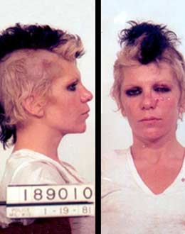 |
| 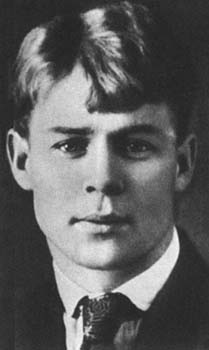 |
"Goodbye, my friend, goodbye. My dear, you are
in my heart. Predestined separation promises a future meeting."
Sergei Esenin (1895-1925)
Russian poet, briefly married to dancer Isadora Duncan. Hanged himself
from the heating pipes in the ceiling of his room at age 30. Wrote his
suicide poem in his own blood the day before he killed himself. |
"It's too late. We can't win, they've gotten too powerful."
Abbie Hoffman
(November 30, 1936 - April 12, 1989)
Activist/author of Steal This Book. Countercultural icon of the 1960's
known for his rejection and parody of corporate America. Invented the term
"yippies" (Youth International Party). During a major anti-war
demonstration, he organized an "Exorcism of the Pentagon," in
which over 50,000 people surrounded the Pentagon in an effort to levitate
the building with their combined psychic energy. He remained a full-time
activist until 1973, when he was arrested for the sale of cocaine. Facing
a mandatory life sentence, Hoffman went underground and disappeared for
6 years - during which time he had plastic surgery and nervous breakdowns.
Committed suicide the same year George HW Bush assumed office. |
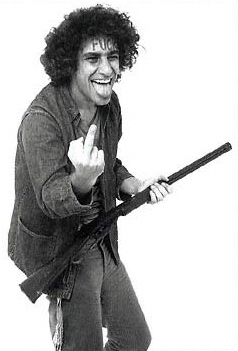 |
| 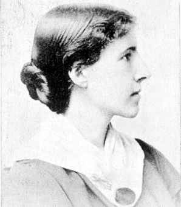 |
"When all usefulness is over, when one is assured of an unavoidable
and imminent death, it is the simplest of human rights to choose a quick
and easy death in place of a slow and horrible one."
Charlotte Perkins Gilman (1860-1935)
Prolific writer in the early 1900's who focused on the "woman question."
Believed men and women should share the responsibility of housework. Influenced
thousands of women through witty, provocative novels, studies, stories,
poems and lectures. Her best known story, The Yellow Wallpaper, is
about a woman who suffers a mental breakdown after the birth of her child.
Gilman married her first cousin, and took her own life before she was completely
overwhelmed by cancer.
|
|
"To my friends: My work is done. Why wait?"
George Eastman (1854-1932)
An ingenious man who contributed greatly to the field of photography.
He developed dry plates, film with flexible backing, roll holders for
the flexible film, the Kodak camera (a convenient form of the camera
for novices), and an amateur motion-picture camera.
Through his experimental photography, he accumulated a large sum of money.
His philanthropic personality prompted him to give his money to various
business endeavors, including the University of Rochester.
Took his own life with an automatic pistol. |
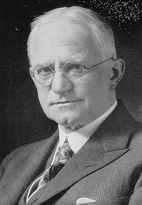 |
| 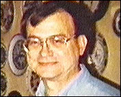 |
"I have failed to accomplish a goal with the truth as my standard.
I have no faith in myself or anyone else. I would rather not continue with
life, since I will only be subjected to further persecution. I wish I had
the strength to continue to fight this evil with honor."
Richard Pickett, a 47-year old certified public accountant with a
history of mental illness. A disgruntled employee of the Internal Revenue Service, terminated in the mid-1980's. Fired shots outside the White House
in a bid to commit Suicide by Cop. Mailed copies of his note to the the
IRS, President Bush, the attorney general's office, and two Indiana Republicans
in Congress. |
|
"To leave this life, to me, is a sweet prospect.
When you read this I will be quite dead and no answer will be possible.
All I can say is that I offered you love, and the best I could. All I
got in return in the end was a kick in the teeth. Thus I die alone and
unloved. As you sowed, so shall you reap."
David Ferrie (1918 - February 22, 1967)
Senior pilot with Eastern Airlines until he was fired for homosexuality
on the job. His odd lifestyle was embellished with an equally bizarre
appearance featuring a red toupee and false eyebrows. A key figure in
the Assassination of John F. Kennedy, and "one of history's most
important individuals," according to Jim Garrison. Investigator Harrison
Livingstone remembers Ferrie as "an intense and sinister, cynical,
disgusting, disheveled individual who was excited at the prospect of preying
upon the vulnerable, the helpless, and the innocent." Worked for
Carlos Marcello. Allegedly killed himself to escape prosecution. |
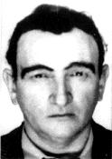 |
| 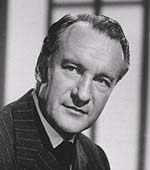 |
"Dear World, I am leaving you because I am bored.
I feel I have lived long enough. I am leaving you with your worries in
this sweet cesspool - good luck."
George Sanders (1906 - April 25, 1972)
Starred in The Picture of Dorian Gray, The Ghost and Mrs. Muir, All
About Eve. The voice of Sher Khan in Disney's The Jungle Book.
Died from overdose of sleeping pills.
|
"They tried to get me - I got them first!"
Vachel Lindsay (1879-1931)
A talented, wandering poet and essayist who traveled penniless across the
country. Often tried to sell his poetry in exchange for meals. His behavior
grew increasingly erratic and filled with episodes of uncontrollable rage
and paranoia. What critics viewed as a lack of social grace were actually
manifestations of Lindsay's deteriorating mental condition, exacerbated
by diabetes and epilepsy. He maintained repeatedly that he was an old man
and his life's work was at an end. Committed suicide by drinking Lysol. |
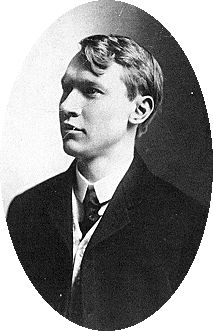 |
| 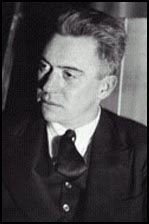 |
"Goodbye, everybody!"
Hart Crane (1899 - 1932)
Crane became one of the most significant modernist American poets, yet his
self-destructive tendencies (violent outbursts, massive drinking binges,
dangerously promiscuous pursuits) came to an end at age 32. He threw himself
from the stern of an ocean liner into the Gulf of Mexico and his body was
never found.
|
|
"To Harald, may God forgive you and forgive me
too but I prefer to take my life away and our baby's before I bring him
with shame or killing him, Lupe."
Lupe Velez
(July 18, 1908 - December 13, 1944)
Tempestuous Mexican actress with a brief career in musical comedy theater
followed by a brief career in cinema. Made close to fifty movies in her
lifetime, but none catapulted her to the superstardom she'd hoped for.
Swallowed handful of sleeping pills. Left two poignant notes detailing
tales of unrequited love and expectant motherhood. |
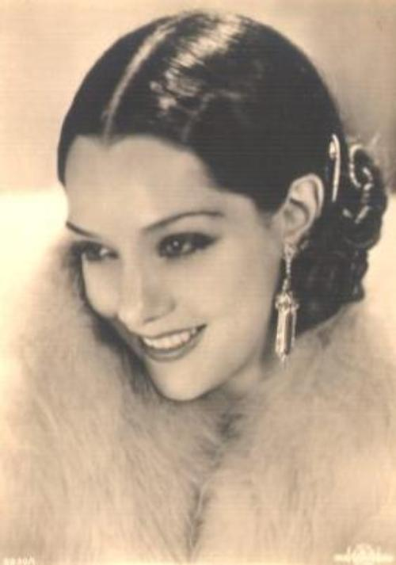 |
| 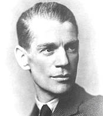 |
'The future is just old age and illness and pain... I must have peace
and this is the only way."
James Whale
(July 22, 1893 - May 29, 1957)
Director of Frankenstein, Bride of Frankenstein, The Invisible Man.
Abandoned filmmaking in the early 1940's as Hollywood grew increasingly
homophobic. The role of James Whale was played by Sir Ian McKellan in the
1998 film Gods and Monsters. Committed suicide by drinking alcohol,
throwing himself into his swimming pool, and striking his head at the bottom. |
Pornopolis |
Rotten |
Faces of Death |
Famous Nudes
|